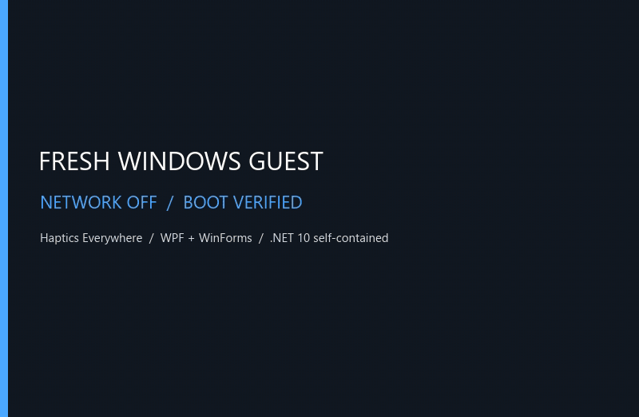
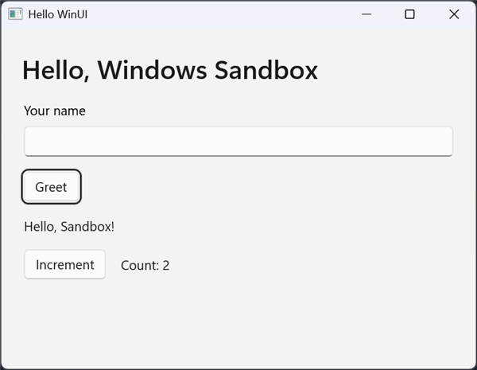
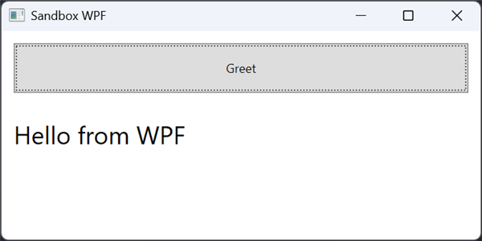
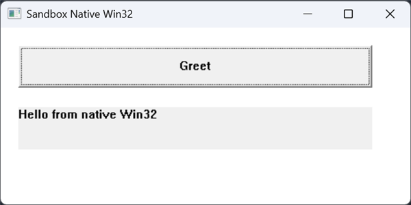

Give your AI agent a brand-new Windows PC
“Works on my machine” isn’t a test.
A real, disposable Windows 11: boot it, deploy your app, drive the controls, catch the crash, keep the evidence, delete the PC. Run it directly with sbx; the optional MCP adapter adds discoverable tools and inline images. Both use the same engine.
> sbx run .\NativeProof.exe --network off
FAIL NativeProof.exe on a fresh Windows Sandbox (29.8s)
why exited with code -1073741515; Missing dependency: VC++ redistributable.
# The customer's PC has no VC++. Opt in, on another fresh guest:
> sbx run .\NativeProof.exe --network off --provision auto
PASS NativeProof.exe on a fresh Windows Sandbox (30.9s)
baseline PROVISIONED (not a clean-machine pass): VC++ redistributable x64
process exited with code 0
- ~15 s
- to boot a clean Windows
- 0
- images to build or download
- 27
- optional MCP tools; full
sbxCLI - Free
- with Windows Pro, Enterprise or Education
The problem
Your PC is the worst place to test your app.
It has every runtime, SDK, redistributable, font, registry key and PATH entry you ever installed. Your users’ PCs don’t. So the missing VC++ runtime you forgot to bundle never shows up until a customer finds it.
Windows Sandbox is the perfect brand-new customer PC: pristine, and deleted when it closes. The shared sandbox-mcp engine adds what it’s missing: app deployment, UI Automation, clean-machine checks and test evidence that outlives the machine.
Your dev box
- Every .NET SDK since 2019
- VC++ redistributables
- WebView2 runtime
- Years of PATH entries
- That one registry key
A fresh sandbox
- Clean Windows 11
- Windows PowerShell 5.1
- .NET Framework 4.8
- No dev tools or winget
- No Store apps, not even Notepad
What it does
Three questions, one command each.
Every run keeps its screenshots, a markdown report and an audit log on your PC after the machine is gone.
Clean-machine smoke tests
Does it even start without the runtime you forgot to bundle? You get a pass or fail, a screenshot and the crash events. Missing runtimes are findings: nothing gets installed unless you ask, and a provisioned run is labeled as not clean.
- Diagnose dependencies with
sbx deps, without running anything - Drive WinForms, WPF, Win32 and WinUI apps by control name, not pixels
- Test EXEs and MSIX packages, with exit codes for CI and scripts
# Scan the app on your PC. Boots nothing, runs nothing
> sbx deps app.exe
# Passes
> sbx run .\samples\HelloSandbox\bin --test .\samples\HelloSandbox\test.ps1
# Fails, and shows the crash
> sbx run .\samples\HelloSandbox\bin --args --crash
# test.ps1 runs inside the sandbox and drives the app by control name
$app = [int]$env:SBX_APP_PID
Invoke-SbxUi -ProcessId $app -AutomationId NameBox -Action setvalue -Value 'Sandbox'
Invoke-SbxUi -ProcessId $app -Name Greet -Action click
Wait-SbxUi -ProcessId $app -Name 'Hello, Sandbox!' -TimeoutSec 5 | Out-NullInstaller and uninstaller testing
Installers only ever run on clean machines, so they’re the part you test least. This one snapshots, installs, snapshots, uninstalls, snapshots, and diffs them all.
- Every file, registry key, service, scheduled task and autorun it added
- Everything the uninstaller forgot
- A hung “silent” install gets screenshotted instead of stalling your CI
> sbx install-test .\7z2501-x64.msi --offline
PASS 7z2501-x64.msi on a fresh Windows Sandbox (117.5s)
install exit 0 in 2.5s
added 7-Zip 25.01 (x64 edition); 111 files, 18 registry keys, 0 services, 0 autorun/env values
uninstall 7-Zip 25.01 (x64 edition): exit 0 in 2.3s
leftovers none, clean uninstall
> sbx install-test .\samples\LeakyApp\install.ps1
## Left behind after uninstall
Services: added service LeakyUpdater "Leaky App Updater", automatic: "C:\Program Files\LeakyApp\updater.exe"
Autoruns: added HKCU\Software\Microsoft\Windows\CurrentVersion\Run\LeakyUpdater
Files: C:\ProgramData\LeakyApp\ C:\Users\WDAGUtilityAccount\AppData\Roaming\LeakyApp\
C:\Windows\System32\Tasks\LeakyApp Daily Check
Registry: HKLM\SOFTWARE\LeakyAppSee what a file you don’t trust does
An invoice.js, a “driver update”, a script from a forum. It runs with no network adapter and Windows auditing on, then the whole machine is deleted.
- Every process it started, with command lines
- Names it looked up and addresses it tried
- Autoruns, scheduled tasks, services and files it planted
Findings are heuristics, not a verdict. It’s a quick first look on your own PC, not a malware lab: a file that detects a sandbox can just behave nicely.
> sbx detonate .\samples\Suspicious\suspicious.ps1 --network firewall
suspicious.ps1: 3 red flag(s) (watched 40s, network firewall)
findings starts itself with Windows: added HKCU\Software\Microsoft\Windows\CurrentVersion\Run\ContosoUpdater =
powershell.exe -WindowStyle Hidden -ExecutionPolicy Bypass -File "C:\Users\...\ContosoUpdater\updater.ps1"
created a scheduled task: ContosoUpdate
put something in a Startup folder: C:\Users\...\Start Menu\Programs\Startup\contoso.cmd
wrote 2 runnable file(s): C:\Users\...\ContosoUpdater\updater.ps1, ...\Startup\contoso.cmd
ran built-in Windows tools that malware often uses: schtasks.exe, whoami.exe, ipconfig.exe, net.exe, net1.exe
looked up 1 internet name(s): c2.contoso-updates.example
tried to connect to 2 address(es): 198.51.100.7:4444, 203.0.113.10:80
processes 7 (powershell.exe → conhost.exe → schtasks.exe → whoami.exe → ipconfig.exe …)
network 1 name lookup(s), 2 connection attempt(s)
changed 4 files added, 0 changed, 2 registry keys, 1 autorun/env values, 0 servicesMeasured, not promised
Real apps, in fresh guests, with no network.
Each run had its own fresh guest, a UI Automation test and screenshots, with no SDK or shared runtime installed. Totals include boot, install, test and teardown.



| App type | Packaging | Result | Boot / total |
|---|---|---|---|
| WinForms | .NET Framework 4.8 EXE | PASS | 15.6 / 41.9 s |
| WinForms | .NET 10 self-contained EXE | PASS | 16.6 / 45.0 s |
| WPF | .NET 10 self-contained EXE | PASS | 16.7 / 45.6 s |
| Native Win32 | x64 EXE, static CRT | PASS | 16.1 / 41.6 s |
| Native Win32 | Dev-signed MSIX | PASS | 18.0 / 48.2 s |
| WinUI 3 | Self-contained EXE | PASS | 14.4 / 42.7 s |
| WinUI 3 | Dev-signed MSIX | PASS | 12.7 / 45.4 s |
These are specific builds, not a promise that every Windows app runs in Sandbox. Read the full compatibility notes.
For your agent
Let your agent close the loop, on a PC it can’t hurt.
Build it, test it on a clean machine, look at the screenshot, fix it, repeat, without the agent touching your real desktop. Works with GitHub Copilot, Claude, Cursor, VS Code and other MCP clients.
Agents read the app the way a screen reader does, so finding a button costs one line of text instead of a screenshot.
Fast inner loop: keep one sandbox warm and redeploy only the files that changed, with every hash verified. When you’re done, a fresh run gives you the clean-machine answer.
Evidence that survives: record the desktop to a self-contained HTML flipbook, plus MP4 if you have ffmpeg, even if the guest crashes.
The CLI and the MCP server share state, so you can sbx start, let an agent poke at the app, then sbx stop.
Build the app, run it in a fresh Windows Sandbox, type my name in the box, click Greet and show me a screenshot.
sandbox_depsWhat does it need? Nothing boots yetsandbox_startClean Windows, desktop readysandbox_deployChanged files only, hashes verifiedsandbox_ui_treeButton "Save" #SaveButton {invoke}sandbox_ui_actionSet text, click, toggle, selectsandbox_screenshotReturned inline to the agentsandbox_stopMachine destroyed, artifacts kept
Why this and not a VM
The fastest honest answer to “does it work on a clean PC?”
| sandbox-mcp | Hyper-V / VMware VM | Windows containers | Cloud dev VMs | |
|---|---|---|---|---|
| Real Windows desktop and GUI | Yes | Yes | No desktop | Linux mostly; yes on Dev Box |
| Clean state every run | Always, by design | Snapshots to manage | Yes | Persistent |
| Startup | ~15 s | Minutes | Seconds | Minutes |
| Images to build or download | None | A 20+ GB VHD | Multi-GB base images | None, but it’s someone else’s computer |
| Cost | Free with Windows Pro or Enterprise | Free-ish, plus disk | Free | Paid |
| Runs offline and local | Yes | Yes | Yes | No |
| Parallel instances | One at a time | Yes | Yes | Yes |
| Persistent environment | No | Yes | Via volumes | Yes |
Need many machines, persistence or Linux? Use a VM or a cloud box. That’s not what this is for.
How it works
Real isolation, with nothing to install inside.
- A hardened sandbox starts. The host creates a run folder and calls
wsb start, with clipboard, printer, mic and camera redirection off. - A small agent goes in. It runs in the interactive session, because it needs a desktop for windows and screenshots.
- It does what
wsb execcan’t. Real command output, file copy, screenshots, mouse, keyboard, event logs and native UI Automation. - The machine is destroyed.
wsb stopdeletes the VM. The run folder with your evidence stays on your PC.
What keeps your PC out of it
- A separate Hyper-V-isolated kernel for each sandbox
- Exactly three shared folders. Nothing else on your disk is visible
- A random per-sandbox key, with control traffic encrypted, authenticated and tied to one boot
network: offmeans no network adapter at all- An audit log of every operation
- Shut down after 30 idle minutes, and when the MCP client that started it disconnects
Strong isolation isn’t a guarantee: a hypervisor or Windows Sandbox escape would be a zero-day. For real malware analysis, use a dedicated, disposable machine.
Get it
Running in three steps.
-
Check your PC
You need Windows 11 24H2 or later on Pro, Enterprise or Education, with virtualization on and at least 4 GB of RAM. Home and Server editions can’t run Windows Sandbox.
-
Turn on Windows Sandbox
It comes with Windows and is probably switched off. In an admin PowerShell, run this and restart. Then open Windows Sandbox from the Start menu once, which installs the
wsbtool.Enable-WindowsOptionalFeature -Online -FeatureName Containers-DisposableClientVM -All -
Pick how you want it
The standalone CLI and optional MCP adapter use the same engine. Use the CLI from a shell; add MCP when your agent benefits from tool discovery and structured results.
- Agent setup to have your agent do it all
- Agent plugin for the server and skills in one install
- Portable ZIP to use the CLI alone, with no Node.js or MCP setup
- From source to hack on it
Let your agent set it up.
It checks the PC and verifies the download. The CLI needs no MCP configuration; if you choose MCP, it preserves existing configuration and asks before admin changes or a restart. No Node.js install needed.
Give this to your agent
Set up the sandbox-mcp CLI by following:
https://raw.githubusercontent.com/shanselman/sandbox-mcp/main/docs/agent-setup.md
Install the latest verified release. The CLI must work without MCP; configure the optional MCP adapter only if my agent needs it. Ask before admin changes or a restart.Optional MCP adapter and five skills for agents.
No cloning or MCP config to edit. Needs Node.js 20 or later. The standalone CLI does not require this plugin.
In VS Code, add shanselman/sandbox-mcp as a marketplace in Chat: Open Customizations, or run Chat: Install Plugin from Source.
GitHub Copilot CLI
copilot plugin marketplace add shanselman/sandbox-mcp
copilot plugin install sandbox-mcp@sandbox-mcpThen ask your agent
Build this app, run it on a clean machine and show me a screenshot.
For the CLI. No Node.js install, MCP setup or PATH changes.
A Windows x64 ZIP with a published SHA256, containing sbx, the optional MCP adapter, the skills and a private Node.js runtime. Extract it and run the CLI directly.
In the extracted folder
.\sbx.cmd doctor
.\sbx.cmd run C:\Windows\System32\charmap.exe --opendoctor is read-only. It says what’s missing and how to fix it, and never changes your PC.
For hacking on it. Puts sbx on your PATH.
Needs Node.js 20 or later. The samples include a test app, a deliberately sloppy installer and a harmless script that acts like malware.
PowerShell
git clone https://github.com/shanselman/sandbox-mcp
cd sandbox-mcp
npm install
npm link
sbx doctorGood to know
What it won’t do.
Better you hear it here than find out halfway through a test.
- One sandbox at a time. That’s a Windows Sandbox rule. Runs fail fast rather than queue.
- Windows x64 hosts only. It needs a logged-in session, so hosted CI runners can’t boot one.
- Not every Windows app. Hardware-dependent work may not run in Sandbox. Check what’s been measured.
- Prerequisites are never installed for you. Bundle them, or opt in on each fresh guest and get a run labeled as not clean.
- Installer tests take a couple of minutes. Each system snapshot takes 10-20 s.